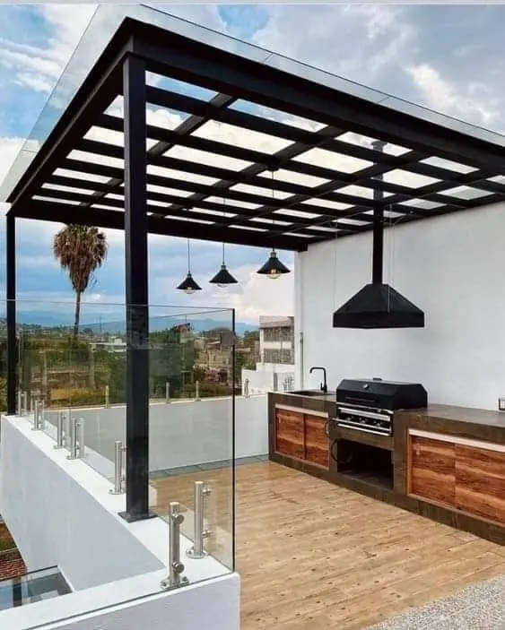

Quien vive en Cancún conoce el patrón: en secas y temporada alta baja la presión y algunas colonias pasan días con poca agua, mientras de junio a noviembre los aguaceros inundan las calles. Captar esa lluvia y reusar las aguas grises le da la vuelta al problema. Para villas en Isla Dorada, Lagos del Sol y Cumbres, torres en Puerto Cancún y Tajamar y hoteles con jardines grandes, significa menos pipas, recibos más bajos y menos dependencia de la red.

Captación en azotea y cisternas enterradas para casas en residenciales, con cambio automático a la red.
Reciclaje de aguas grises para sanitarios y jardines, más cisternas mayores para aguantar los cortes.
Reúso en riego y lavandería para hoteles de Zona Hotelera y del centro con recibos altos.
Captación y retención que además reduce inundaciones de accesos y sótanos.
Redes no potables separadas en obra nueva y remodelaciones.
Sensores de nivel y alertas en su teléfono para conocer su reserva antes del siguiente corte.
La mayor parte de la lluvia de Cancún cae de junio a noviembre, con eventos fuertes durante tormentas tropicales, mientras de marzo a mayo es seco. Una cisterna dimensionada solo con el total anual se vacía justo cuando la red está más débil. Modelamos lluvia y demanda mes a mes, agregamos separadores de primeras lluvias para que el polvo y la sal del techo se queden fuera, y dimensionamos el rebose para la intensidad de tormenta, de modo que el sistema también proteja la casa de inundaciones.
En edificios de varios niveles, el reciclaje de aguas grises para sanitarios suele ser lo que más rinde: un volumen grande y constante reusado cada día. Requiere un montante separado y un cuarto de tratamiento, así que es más fácil en torres nuevas y remodelaciones mayores. En hoteles existentes, el reúso en riego y lavandería se agrega con menos afectación.
| Sistema | Cliente típico | Costo (MXN) |
|---|---|---|
| Captación pluvial | Villa en residencial | $80k–$450k |
| Reciclaje de aguas grises | Villa o condominio pequeño | $90k–$400k |
| Sistema combinado | Torre de departamentos u hotel | $1.5M–$6M |
Páginas útiles: Reúso de Aguas Grises y Pluviales — Riviera Maya · Mismo servicio en Playa del Carmen · Plantas de Tratamiento en Cancún · Potabilizadoras y Desalinizadoras en Cancún · Tratamiento de Agua para Casas en Cancún
Modelo mes a mes, tamaño de cisterna y ahorro. Respuesta en 2 minutos.
Cotizar por WhatsApp